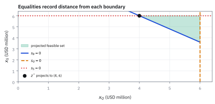
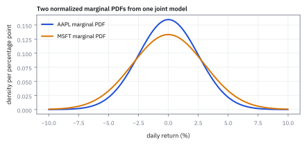

5.2 Standard Form of a Linear Program
เขียนโจทย์เลือกค่าที่ดีที่สุดในรูปมาตรฐาน
ร้านขนมมีแป้ง 10 ถ้วยและน้ำตาล 8 ถ้วย ต้องเลือกทำคุกกี้สองสูตรให้กำไรมากสุด คุณจะเขียนกติกาให้เครื่องอ่านโดยไม่ต้องตีความคำว่า “พอ” เองได้อย่างไร?
เฉลย: ถ้าคุกกี้ A ใช้แป้ง 2 ถ้วยและ B ใช้ 1 ถ้วย จำนวนที่ผลิตคูณด้วยการใช้ต่อชิ้นต้องไม่เกิน 10
linear program คือโจทย์เลือกค่าที่ดีที่สุดเมื่อเป้าหมายและข้อจำกัดเป็นเส้นตรง; standard form จัดตัวแปรและสมการให้ algorithm ใช้กติกาเดียวกัน
standard form เหมือนปลั๊กที่ทำให้ solver ทุกตัวรับโจทย์เดียวกันได้; งานจริงใช้ส่ง allocation และ hedge problem เข้า solver ที่ตรวจได้
ศัพท์ที่ใช้ในหัวข้อนี้
- standard form
- รูปของ linear program ที่ใช้ equality constraints และ non-negative variables ใช้ส่ง problem เข้า solver ด้วย convention ที่ audit ได้
- decision variable
- quantity ที่ solver เลือก เช่น hedge notional ใช้แทน order sizes ที่ต้องหา
- slack variable
- ตัวแปรไม่ติดลบที่เติมใน upper-bound inequality ใช้วัด capacity ที่ยังไม่ได้ใช้และเปลี่ยน inequality เป็น equality
- surplus variable
- ตัวแปรไม่ติดลบที่ลบออกจาก lower-bound inequality ใช้วัดปริมาณที่ทำเกิน minimum requirement
- non-negativity
- ข้อกำหนดว่าตัวแปรต้องไม่ต่ำกว่าศูนย์ ใช้รักษาความหมายของ hedge size, slack และ surplus
- binding constraint
- constraint ที่มี slack หรือ surplus เป็นศูนย์ ใช้ระบุ limit ที่กำหนด optimum จริง
- constraint matrix
- matrix ของ coefficients ที่ map decision variables ไปยังทุก constraint ใช้ให้ row labels, units และ arithmetic อยู่ในวัตถุเดียว
- right-hand side
- vector ของ targets และ limits ที่อยู่ฝั่งขวาของ equalities ใช้เป็นยอดที่แต่ละ constraint row ต้อง reconcile
สัญลักษณ์ที่ใช้ในหัวข้อนี้
| สัญลักษณ์ | ความหมาย | หน่วย |
|---|---|---|
| $x_Q,x_S$ | short notionals ของ QQQ และ SPY | USD million |
| $s_B$ | beta-exposure surplus เหนือ requirement 10.8 | beta-USD million |
| $s_Q,s_S$ | unused QQQ และ SPY capacity | USD million |
| $z$ | vector ที่รวม decision, surplus และ slack variables | แต่ละ component ใช้หน่วยของตัวเอง |
| $z^*$ | standard-form variable vector ณ optimal hedge | แต่ละ component ใช้หน่วยของตัวเอง |
| $A_{eq}$ | equality-constraint matrix | แต่ละ row แปลงเป็นหน่วยของ right-hand side แถวนั้น |
| $d$ | ตัวเลขฝั่งขวาของทุกข้อจำกัด ได้แก่ beta ที่ต้องลดให้ได้ และเพดานขนาดของแต่ละตัว | beta-USD million, USD million, USD million |
| $c$ | objective-cost vector | USD ต่อหน่วยของแต่ละ component |
| $C$ | execution cost รวม | USD |
| A_{\text{eq}} | matrix ของข้อจำกัดความเท่ากันใน standard form | |
| s_i | slack หรือ surplus variable สำหรับข้อจำกัดแถวที่ $i$ |
ที่มาที่ไป: โจทย์วางแผนส่งกำลังบำรุงของกองทัพ
วิธีการในหัวข้อนี้เกิดขึ้นในปี 1947 เมื่อ George Dantzig ทำงานให้กองทัพอากาศสหรัฐฯ โจทย์คือการวางแผนส่งกำลังบำรุงที่มีทางเลือกมหาศาลและมีข้อจำกัดเต็มไปหมด
คำว่า programming ในชื่อวิธีนี้จึงไม่ได้แปลว่าการเขียนโปรแกรมคอมพิวเตอร์ แต่หมายถึงการวางแผนหรือจัดตาราง ตามภาษาที่กองทัพใช้ในยุคนั้น
ก่อนหน้านั้นปัญหาแบบนี้แก้ด้วยการเดาและลองปรับ ซึ่งไม่มีทางรู้ว่าคำตอบที่ได้ดีที่สุดหรือยัง สิ่งที่ Dantzig ให้คือวิธีที่รับประกันได้ว่าเจอคำตอบที่ดีที่สุดจริง
เงื่อนไขเดียวคือปัญหาต้องเขียนในรูปมาตรฐานเสียก่อน ซึ่งเป็นสิ่งที่หัวข้อนี้สอน
เบื้องหลังประวัติศาสตร์: ปัญหาการส่งกำลังบำรุงและกำเนิดของ Simplex
ในช่วงสงครามโลกครั้งที่ 2 และช่วงวิกฤตการณ์เบอร์ลิน (Berlin Airlift) กองทัพอากาศสหรัฐฯ ต้องเผชิญกับภารกิจส่งกำลังบำรุงที่ซับซ้อนอย่างยิ่ง การจัดสรรเครื่องบิน น้ำมัน อะไหล่ และเสบียงนับพันรายการ ไปยังฐานบินต่าง ๆ ภายใต้ข้อจำกัดของรันเวย์และเวลาบิน เป็นงานที่เสนาธิการหลายร้อยคนต้องใช้เวลาวางแผนด้วยมือนานหลายสัปดาห์ แต่วิธีลองผิดลองถูกบนกระดาษไม่เคยรับประกันได้เลยว่าแผนนั้นมีประสิทธิภาพสูงสุด หรือมีทางเลือกอื่นที่ประหยัดทรัพยากรกว่า
ในปี 1947 George Dantzig ซึ่งทำงานเป็นที่ปรึกษาทางคณิตศาสตร์ให้โครงการวางแผนของเพนตากอน ได้ค้นพบว่าปัญหาเหล่านี้สามารถเขียนเป็นระบบพีชคณิตที่มีเป้าหมายเป็น linear function ภายใต้ข้อจำกัดที่เป็นสมการและอสมการเชิงเส้น และเขาได้พัฒนา Simplex algorithm ขึ้นเพื่อค้นหาจุดยอดที่ดีที่สุดของทรงหลายเหลี่ยมได้อย่างเป็นระบบ
แต่หัวใจของ Simplex คือมันต้องการให้อสมการทั้งหมดถูกแปลงเป็นระบบสมการที่ตัวแปรทุกตัวไม่ติดลบเสียก่อน เรียกว่า standard form ซึ่งทำหน้าที่เป็นภาษากลางระหว่างมนุษย์กับคอมพิวเตอร์ การแปลงโจทย์จึงไม่ใช่แค่การจัดรูปพีชคณิต แต่เป็นการสร้างสัญญาทางคณิตศาสตร์ที่โปรแกรม solver ทุกตัวอ่านเข้าใจตรงกัน
รากฐานคณิตศาสตร์ — กติกาการแปลง linear program สู่ standard form
กติกาพื้นฐานในการแปลงโจทย์ linear program ทั่วไปให้อยู่ในรูปมาตรฐาน มีหลักการตายตัวสามข้อ คือการลบ surplus สำหรับขอบล่าง การบวก slack สำหรับขอบบน และการกลับเครื่องหมายสำหรับโจทย์ maximize โดยตัวแปรทุกตัวในระบบใหม่ต้องไม่ติดลบเสมอ
อสมการแบบมากกว่าหรือเท่ากับ หมายถึงฝั่งซ้ายผลิตผลลัพธ์เกินค่าขอบล่าง $b_i$ เราจึงนิยาม surplus variable $s_i \ge 0$ ขึ้นมาหักส่วนเกินออกเพื่อให้กลายเป็นสมการพอดี
สำหรับอสมการแบบน้อยกว่าหรือเท่ากับ ฝั่งซ้ายใช้ทรัพยากรไม่เกินเพดาน $b_i$ เราจึงบวก slack variable $s_i \ge 0$ เพื่อชดเชยกำลังการผลิตที่ยังว่างอยู่ให้เต็มยอด
หากโจทย์เดิมเป็น maximize เราแปลงเป็น minimize ได้ด้วยการกลับเครื่องหมายลบของ objective function เมื่อรวมตัวแปรทั้งหมดเป็น vector $z \ge 0$ จะได้ระบบสมการเชิงเส้น $A_{\text{eq}}z = d$ ที่ solver จัดการได้ทันที
Worked Example — โจทย์และสิ่งที่ให้มา
โจทย์ให้อะไรมาบ้าง: จากหัวข้อ 5.1 เรา minimize $180x_Q+90x_S$ ภายใต้ beta requirement 10.8 และ caps ตัวละ 6 การเข้า standard form ห้ามเปลี่ยน feasible set หรือ optimum; มันเพียงเพิ่ม variables ที่บอกว่ายังเหลือหรือทำเกินเท่าไร
ขั้นที่ 1 — เริ่มจาก inequalities เดิม
โจทย์จริงมาในรูปที่ไม่เป็นระเบียบ มีทั้งมากกว่าและน้อยกว่าปนกัน เริ่มจากเขียนมันตามที่เป็นก่อน
เป้าหมายความเสี่ยงของพอร์ตต้องการลด beta exposure รวมอย่างน้อย 10.8 beta-USD million ซึ่งเป็นข้อจำกัดแบบมากกว่าหรือเท่ากับที่ต้องทำให้ผ่าน
สภาพคล่องในตลาดจริงมีขีดจำกัด จึงต้องกำกับไม่ให้คำสั่งขาย QQQ และ SPY เกินเพดานตัวละ 6 ล้านดอลลาร์ตามนโยบายของ desk กลายเป็นข้อจำกัดแบบน้อยกว่าหรือเท่ากับ
ขนาดการขาย short ต้องเป็นค่าบวกหรือศูนย์เท่านั้น เพื่อไม่ให้กลายเป็นการซื้อสินทรัพย์เสี่ยงเพิ่ม การจำแนกประเภทข้อกำหนดเหล่านี้คือขั้นตอนแรกของการจัดรูปสู่ standard form
ขั้นที่ 2 — ลบ surplus จาก lower bound
แปลงข้อบังคับแบบ 'อย่างน้อย' ให้เป็นสมการ โดยหักส่วนที่เกินออกเป็นตัวแปรใหม่
เริ่มต้นจากอสมการขอบล่างเดิม แล้วย้าย 10.8 ไปลบทางซ้ายเพื่อให้ฝั่งขวาเป็นศูนย์ ผลต่างทางฝั่งซ้ายคือปริมาณ beta exposure ที่ส่งมอบเกินกว่าเกณฑ์ขั้นต่ำ
เรานิยามตัวแปรส่วนเกิน $s_B \ge 0$ ให้เท่ากับผลต่างนี้โดยตรง เพื่อให้ตัวแปรใหม่มีสถานะเป็น bookkeeping variable ที่ไม่ติดลบ
เมื่อย้าย 10.8 กลับมาฝั่งขวา จะได้สมการเชิงเส้นที่สมบูรณ์ หากที่จุด optimum คำนวณได้ $s_B=0$ แสดงว่าการ hedge พอดีกับข้อกำหนดอย่างแม่นยำ
ขั้นที่ 3 — เติม slack ให้ upper bounds
ทำแบบเดียวกันกับข้อบังคับแบบ 'ไม่เกิน' แต่คราวนี้เติมส่วนที่ยังเหลือเข้าไป
สำหรับเพดานสภาพคล่องของ QQQ ค่า $6-x_Q$ คือโควตาการขายที่ยังเหลือว่าง เรานิยาม slack variable $s_Q \ge 0$ มารองรับส่วนนี้ ทำให้ผลรวม $x_Q+s_Q=6$ พอดี
ในทำนองเดียวกันสำหรับ SPY เรานิยาม $s_S := 6-x_S \ge 0$ เพื่อบันทึก unused capacity ทำให้ข้อจำกัดกลายเป็นสมการ $x_S+s_S=6$
การใช้เครื่องหมายบวกกับ slack ช่วยรักษาระดับเพดานเดิมไว้โดยไม่บิดเบือน feasible region
ขั้นที่ 4 — รวมเป็น matrix equality
เมื่อทุกข้อกลายเป็นสมการหมดแล้ว รวบทั้งหมดเป็นรูป matrix เดียว ซึ่งเป็นรูปที่ตัวแก้ปัญหาทุกตัวรับได้
ผลคูณของ matrix แถวแรกกับ vector ตัวแปร ให้สมการ $1.2x_Q+x_S-s_B=10.8$ ตรงกับแถว beta พอดี
ส่วนข้อจำกัดสภาพคล่องในแถวล่างดึงเฉพาะตัวแปร $x_Q+s_Q$ และ $x_S+s_S$ เท่ากับ 6 ตามลำดับ ตำแหน่งที่ไม่เกี่ยวข้องถูกคูณด้วยศูนย์ทั้งหมด
โครงสร้างทั้งหมดรวมกันเป็นสมการเชิง matrix $A_{\text{eq}}z = d$ ภายใต้เงื่อนไข $z \ge 0$ ซึ่งพร้อมส่งต่อให้ solver ทางคอมพิวเตอร์ประมวลผลทันที
ขั้นที่ 5 — ใส่ objective ใน vector เดียว
ตัวแปรที่เพิ่มเข้ามาไม่มีต้นทุน จึงใส่ศูนย์ไว้ในตำแหน่งของมัน
vector ต้นทุน $c$ ใส่ค่าธรรมเนียม 180 ดอลลาร์สำหรับ QQQ และ 90 ดอลลาร์สำหรับ SPY ในสองตำแหน่งแรก
ตำแหน่งที่เหลืออีกสามช่องสำหรับตัวแปร surplus และ slacks ใส่ค่าเป็นศูนย์ เพราะตัวแปรเหล่านี้ทำหน้าที่บันทึกสถานะทางคณิตศาสตร์เท่านั้น ไม่ใช่คำสั่งซื้อขายจริงในตลาด
ผลคูณภายใน $c^{\mathsf T}z$ จึงคืนค่าต้นทุนการทำรายการที่เป็นตัวเงินดอลลาร์ตามเดิมอย่างแม่นยำ
ขั้นที่ 6 — ตรวจ optimum ใน standard form
ตรวจว่าคำตอบเดิมยังใช้ได้ในรูปใหม่ และดูว่าตัวแปรที่เพิ่มมาบอกอะไรเราบ้าง
แทนค่าคำตอบ $z^*=[4,6,0,2,0]^{\mathsf T}$ ลงในสมการแถวแรก ได้ผลลัพธ์ $4.8+6.0=10.8$ ปิดยอด beta constraint พอดี จึงมี surplus เป็นศูนย์
ตัวแปร slack ชี้ว่า QQQ ใช้โควตาไป 4 เหลือว่าง 2 ล้านดอลลาร์ ขณะที่ SPY ชนเพดานเต็มที่
ต้นทุนรวมคำนวณได้ 720 บวก 540 รวมเป็น 1,260 ดอลลาร์ เท่ากับต้นทุนเดิมทุกประการ ยืนยันว่าการแปลงเป็น standard form ไม่เปลี่ยนคำตอบของปัญหา
แล้วเอาไปใช้ทำอะไรได้จริงบ้าง
การเขียนโจทย์ในรูปมาตรฐานเป็นสะพานระหว่างปัญหาในหัวกับซอฟต์แวร์ที่แก้มันได้
ใช้ส่งปัญหาให้ตัวแก้ปัญหาสำเร็จรูป ซึ่งทุกตัวรับเฉพาะรูปแบบนี้ ไม่ว่าจะเป็นตัวฟรีหรือตัวเชิงพาณิชย์
ใช้ทำให้ปัญหาที่หน้าตาต่างกันกลายเป็นปัญหาเดียวกัน เช่นการจัดสรรพอร์ต การส่งคำสั่ง และการจับคู่คำสั่งซื้อขาย ล้วนเขียนได้ในรูปเดียวกันนี้
ใช้อ่านความหมายของตัวแปรที่เพิ่มเข้ามา ซึ่งบอกว่าข้อจำกัดข้อนั้นยังเหลือที่ว่างเท่าไร
Figure 5.2a — Standard-form geometry

Standard form ไม่เปลี่ยน feasible triangle ใน $(x_Q,x_S)$ projection; slack และ surplus เพียงบันทึกระยะจาก boundaries ของ triangle เดิม
Figure 5.2b — Constraint utilisation

Beta requirement และ SPY cap ใช้ 100% จึง binding ส่วน QQQ ใช้ 4 จาก 6 หรือ 66.7% ทำให้เหลือ slack \$2M
Figure 5.2c — Equality-row audit

ทั้งสาม left-hand sides ตรงกับ right-hand sides ที่ optimum การเทียบ row ต่อ row จับ coefficient, sign และ ordering errors ก่อนเรียก solver
Figure 5.2d — Matrix contract for the solver

Variable order, row order และ units เป็นส่วนหนึ่งของ solver contract; สลับ column โดยไม่สลับ labels จะสร้างคำตอบที่คำนวณได้แต่ trade ไม่ได้
คำตอบ — slack ชี้ว่า SPY cap เต็ม
คำตอบ: standard-form solution คือ z = [4,6,0,2,0] โดย QQQ ใช้ 4 USD million, SPY ใช้เต็ม 6, surplus ของ beta constraint เป็นศูนย์, QQQ เหลือ capacity 2 และ SPY ไม่เหลือ capacity
ตรวจเองใน 10 วินาที: สาม equality rows ต้องให้ 1.2×4 + 6 - 0 = 10.8, 4 + 2 = 6 และ 6 + 0 = 6; objective 180×4 + 90×6 ต้องได้ 1,260 USD
ใช้ตัดสินใจ: SPY cap เป็น constraint ที่กำลังบีบคำตอบ ส่วน QQQ cap ยังผ่อนได้อีก 2 USD million ข้อมูลนี้บอกทันทีว่าควรตีราคา capacity ฝั่งใดใน dual
กับดัก: ใช้ slack กับ lower bound ผิดเครื่องหมาย
minimum hedge requirement ต้องลบ surplus ไม่ใช่บวก slack ลองแทน no-trade ทุกครั้ง: ถ้า model สร้างตัวแปรไม่ติดลบมาช่วยให้ $(0,0)$ ผ่าน requirement 10.8 แสดงว่า equality ถูกเขียนกลับด้าน
ข้อจำกัด: วิธีนี้สมมติอะไร และของจริงเป็นอย่างไร
| เรื่อง | วิธีนี้สมมติว่า | ของจริงเป็นอย่างไร | ผลที่ตามมาเวลาใช้งาน |
|---|---|---|---|
| รูปของปัญหา | ทุกอย่างเป็นเส้นตรง | ต้นทุนการซื้อขายไม่เป็นเส้นตรง | ต้องประมาณเป็นเส้นตรงเป็นช่วง ๆ หรือเปลี่ยนไปใช้เครื่องมือที่รับความโค้งได้ |
| จำนวนเต็ม | ตัวแปรเป็นเลขทศนิยมได้ | จำนวนหุ้นและจำนวนสัญญาเป็นจำนวนเต็ม | คำตอบต้องปัด และการปัดอาจทำให้ผิดข้อจำกัด |
| ขนาด | แก้ได้ทุกขนาด | ปัญหาที่ใหญ่มากใช้เวลานานเกินกว่าจะทันรอบการเทรด | ต้องลดขนาดปัญหาหรือยอมรับคำตอบที่ดีพอแทนคำตอบที่ดีที่สุด |
แถวกลางฟังดูเล็กน้อยแต่สร้างปัญหาจริงบ่อยมากในพอร์ตที่มีสินทรัพย์ราคาสูงต่อหน่วย
สรุปที่ใช้ได้จริง
- standard form เปลี่ยน inequalities เป็น equalities โดยไม่เปลี่ยน feasible set หรือ optimum
- lower bound ใช้ surplus ที่ถูกลบ ส่วน upper bound ใช้ slack ที่ถูกบวก
- $z^*=(4,6,0,2,0)$ ปิดยอดทุก constraint row และรักษา cost \$1,260
- variable order, row labels และ units ต้องเดินทางพร้อม matrix ทุกครั้ง